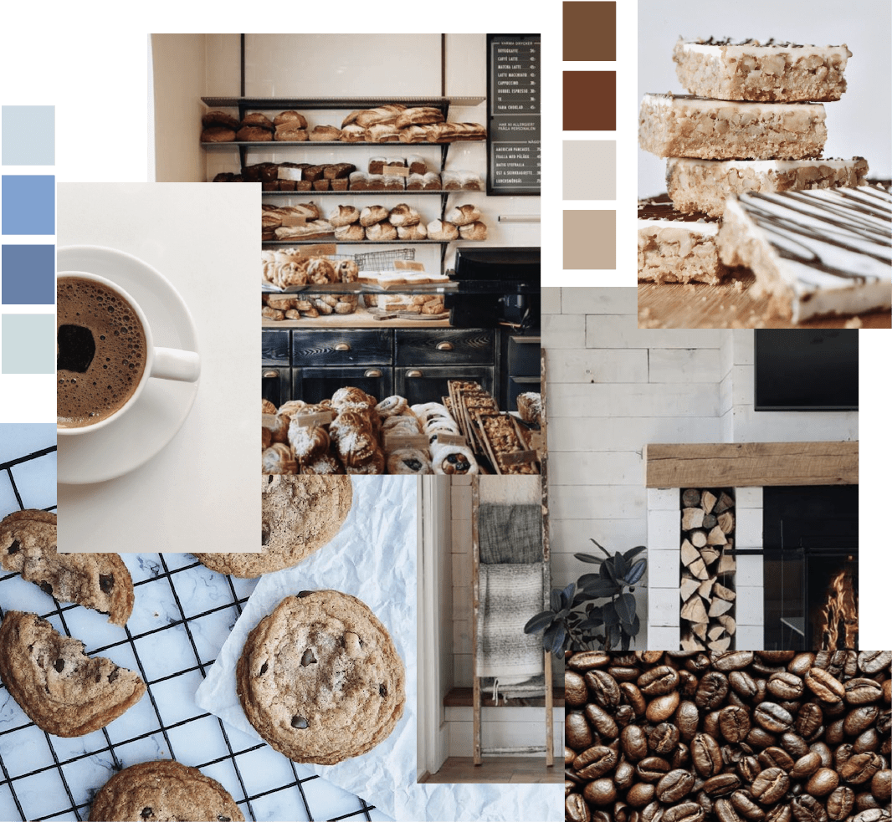

Arquetipos de Usuarios
María José, 32 años
Buscan comprar algo rico de un dato confiable. Por lo general se mueven mucho con el boca a boca, por lo que es así como llegaron a la página. Es una persona preocupada que le gusta tener cosas ricas para sorprender a sus invitados cada vez que tienen una ocasión especial en su casa. Le gusta a poyar a las pymes más que a las grandes pastelerías.
Felipe, 22 años
Buscan algun tipo de regalo, o que quieren darse un gusto para motivar su estudio. Conocen la página por instagram y compran en pequeñas cantidades. Suelen guiarse por la imagen de la página web o instagram de las cosas, por lo que la imagen es más importante para comprar el producto.
Blanca, 62 años
Son personas que conocen la tecnología y que se manejan dentro de las redes sociales. Buscan tener algo rico en la mesa para sus familias. No suelen tener Instagram por lo que la creación de una página web les resultaría más fácil de ocupar. Es una persona práctica, prefiere el delivery para no tener que moverse por Santiago yendo a buscar las cosas.
Moodboard
Boceto de portada en pantalla grande
Boceto de portada en pantalla chica

Boceto de página interior en pantalla grande
Boceto de página interior en pantalla chica